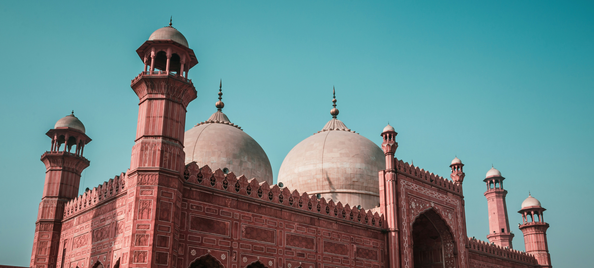
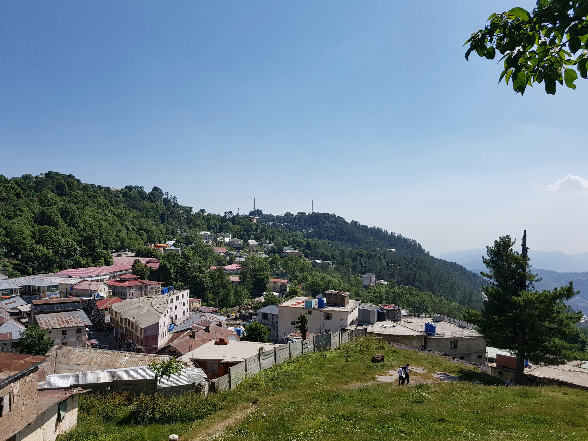
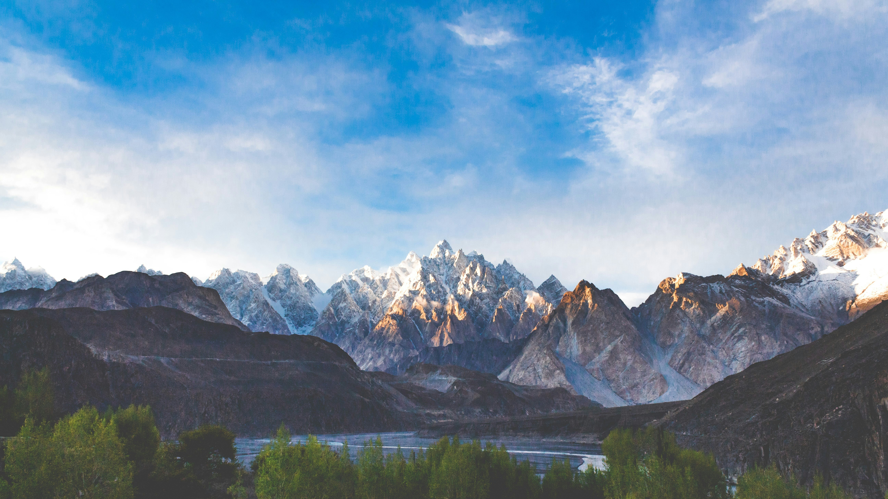
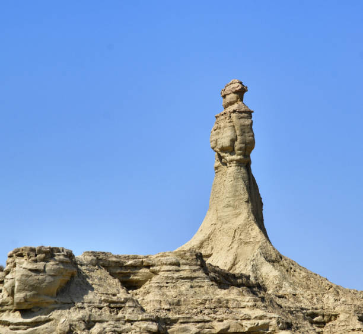
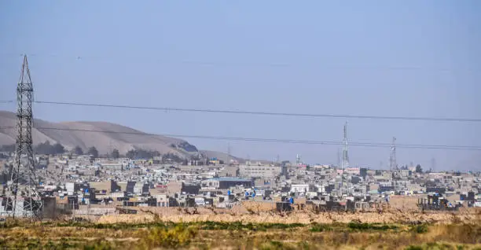
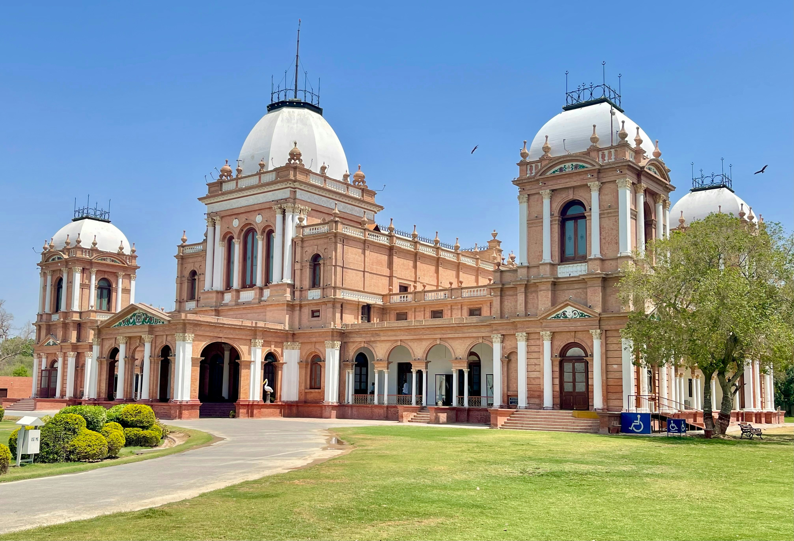
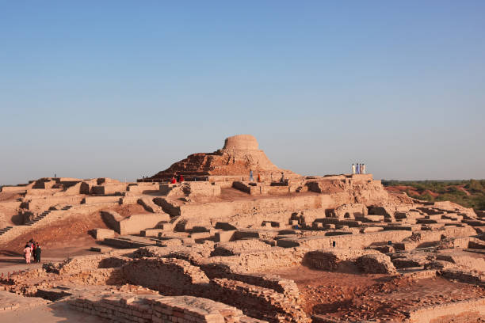
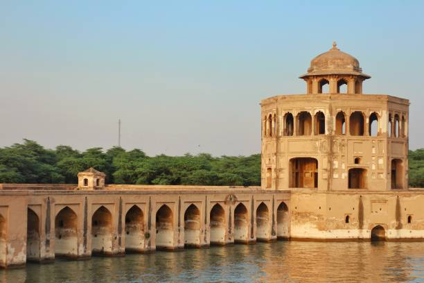
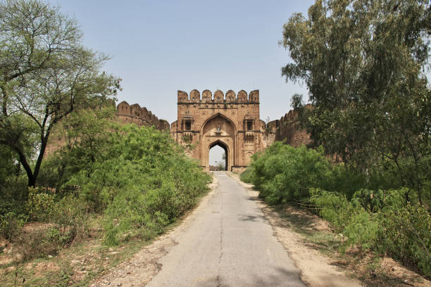

All Destinations

Lahore
Lahore is Pakistan's second-largest city and the capital of province Punjab, renowned as the country's cultural, historical, and intellectual heart.
ViewIslamabad
Islamabad, Pakistan's modern capital, is a serene, green city. As a top tourist destination, it offers a mix of architectural landmarks like the iconic Faisal Mosque, scenic viewpoints such as Daman-e-Koh.
View
Karachi
Karachi, known as the "City of Lights" is Pakistan’s largest, most vibrant, and multicultural city, serving as a bustling economic hub on the Arabian Sea. Offering a high-energy mix of colonial history, diverse food scenes, and beaches.
View
Murree
Murree is Pakistan’s most popular, hill station, situated at 6,000–7,000 feet in the Punjab province. Known for its cool summer climate and snow-covered winter scenery, it is easily accessed from Islamabad.
View
Hunza
Hunza Valley, nestled in Pakistan's Gilgit-Baltistan region, is a stunning mountainous paradise known for its breathtaking turquoise lakes, ancient forts, and towering 7,000m peaks.
ViewSkardu
Skardu is a premier tourist and trekking hub known for its dramatic landscapes. The area is surrounded by beautiful valleys like Chunda, Basho, and Bilamik.
ViewKhewra Salt Mine
The Khewra Salt Mine is the world's second-largest and oldest salt mine, famous for producing Himalayan pink salt. Tourists can explore tunnels featuring illuminated salt crystal formations, a salt-brick mosque, and replicas of different landmarks.
ViewKaghan Valley
Kaghan Valley is a premier summer destination known for its dramatic mountain scenery, lush alpine meadows, and the clear Kunhar River. Popular for families and adventure seekers, it offers iconic spots like Saif-ul-Malook Lake and Babusar Top
View
Hingol National Park
Hingol National Park is Pakistan's largest national park located on the Makran coast in Balochistan. Known for its surreal landscapes, it features the Hingol River, unique rock formations, mud volcanoes, and a rich diversity of wildlife.
ViewSwat
Swat Valley, often called the "Switzerland of the East", is a breathtaking destination, known for its lush green mountains, snow-capped peaks, and clear rivers.
ViewPeshawar
Peshawar, the historic "City of Flowers" is a vibrant, ancient hub known for legendary Pashtun hospitality, rich Mughlai/Buddhist history, and intense, rustic street food.
View
Quetta
Quetta, the "Fruit Garden of Pakistan," is a high-altitude city (1,680m) in Balochistan surrounded by rugged mountains, offering a unique blend of Pashtun, Baloch, and Brahui cultures, cool summers, and scenic spots like Hanna Lake and Hazarganji Chiltan National Park.
ViewMultan
Multan, known as the "City of Saints" and one of Pakistan's oldest cities (5,000+ years), offers tourists a deep dive into spirituality, history, and vibrant culture. Famous for its magnificent Sufi shrines, blue pottery, and historic, bustling bazaars.
View
Gwadar
Gwadar, a rising coastal city in Balochistan, Pakistan, is a premier tourist destination known as a "hidden coastal jewel" where dramatic rocky mountains meet the Arabian Sea. Offering pristine, uncrowded beaches, stunning landscapes like the Hammerhead peninsula, and high-quality seafood.
ViewFairy Meadows
Fairy Meadows, located at 3,300 meters in Gilgit-Baltistan, Pakistan, is a breathtaking alpine plateau offering unparalleled close-up views of Nanga Parbat, the world's ninth-highest peak. Known as "Heaven on Earth," it is famous for its lush green meadows, dense pine forests, and serene camping.
View
Bahawalpur
Bahawalpur, known as the "City of Nawabs" in Punjab, Pakistan, is a premier tourist destination offering a blend of royal heritage, desert adventures, and stunning architecture. Key attractions include the opulent Noor Mahal, the majestic 40-bastion Derawar Fort in the Cholistan Desert, and the scenic Lal Suhanra National Park.
ViewChitral
Chitral, located in Pakistan's Khyber Pakhtunkhwa province along the Hindu Kush range, is an enchanting destination renowned for its dramatic landscapes, the unique culture of the Kalash people, and stunning natural beauty. Key highlights include the Kalash Valleys.
ViewKashmir
Azad Jammu and Kashmir (AJK) is a breathtakingly scenic region, often called "Heaven on Earth," featuring lush green valleys, soaring Himalayan peaks, and clear rivers. It offers tourists an idyllic getaway, perfect for nature lovers and adventurers seeking, with top destinations including Neelum Valley, Ratti Gali Lake, and Rawalakot.
ViewMalam Jabba
Malam Jabba, located in Pakistan's Swat Valley at ~9,200 feet, is a premier year-round hill station renowned for its ski resort, scenic pine forests, and adventure sports. It offers the country's only public ski resort, a popular chairlift with panoramic views, ziplining.
ViewNeelam Valley
Neelum Valley in Azad Kashmir, Pakistan, is a 144 km long, bow-shaped forested paradise, renowned for the rushing Neelum River, lush greenery, and snow-capped peaks. Offering a mix of serenity and adventure, highlights include picturesque villages like Keran, ancient ruins in Sharda, and the scenic hilltop village of Arang Kel.
ViewDeosai National Park
Deosai National Park is one of the highest plateaus in the world, often called the "Land of Giants." Known for its vast golden plains, wildflowers, and stunning views of snow-covered mountains, it is home to rare wildlife like the Himalayan brown bear.
ViewKalar Kahar
Kallar Kahar Park, located in Pakistan's Chakwal district, is a premier natural recreational spot famous for its scenic saltwater lake, lush gardens, and migratory peacocks. Tourists enjoy boating, horse riding, and visiting the historic Takht-e-Babri.
View
Mohenjo Daro
Mohenjo-daro is an ancient city that is about 5,000 years old and was part of the Indus Valley Civilization. Visitors can explore the well-preserved ruins, including old brick houses, planned streets, and the famous Great Bath.
ViewKumrat Valley
Kumrat Valley, located in Upper Dir, Khyber Pakhtunkhwa, is a serene, scenic, and rustic alpine destination famous for its lush green pine forests, snowy mountains, and the sparkling Panjkora River. Ideal for nature lovers and campers, it offers a peaceful escape.
ViewToli Pir
Toli Pir is a breathtaking, high-altitude meadow in Rawalakot, Azad Kashmir, offering views of the Poonch River and Himalayan range. It features stunning, sweeping meadows, pine forests, and cool weather.
View
Sheikhupura
Sheikhupura, founded in 1607 by Mughal Emperor Jahangir near Lahore, is a major industrial city. It features historical landmarks like the 17th-century Sheikhupura Fort and the scenic Hiran Minar hunting complex.
View
Rohtas Fort
Rohtas Fort is a 16th-century fortress located near the city of Dina in Jhelum district of the Punjab province, Pakistan. It is now one of the largest and most formidable forts in Punjab.
View